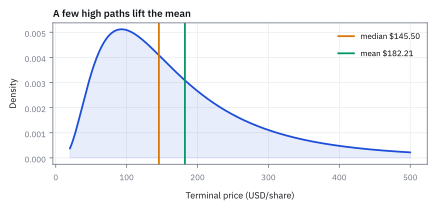
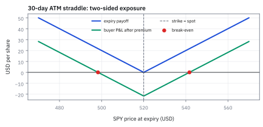
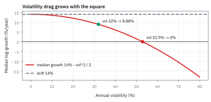
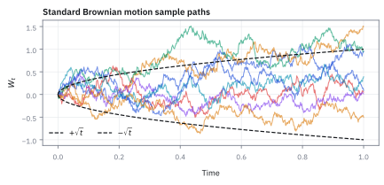

10.2 Expected Future Price — Why the Drift Is Exactly μ
ค่าเฉลี่ยของราคาโตที่ μ พอดี แต่เส้นทางกลาง ๆ โตที่ μ − σ²/2 และช่องว่างนี้กว้างขึ้นทุกปีที่ถือ
กองทุนแห่งหนึ่งลงโฆษณาว่า “มูลค่าโตเฉลี่ย 14% ต่อปี” คุณกำลังคิดจะลงเงินก้อนหนึ่งแล้วทิ้งไว้ 20 ปี จึงอยากรู้ว่าตอนถอนออก เงินก้อนนั้นน่าจะเป็นเท่าไร
ของที่รู้ (สมมติทั้งหมด):
- เงินลงทุนวันนี้ $S_0=\$100$
- อัตราโตเฉลี่ย $\mu=14\%$ ต่อปี ตัวเลขนี้คือ drift ของ GBM (model ราคาสุ่มที่หน้าก่อนสร้างไว้) หมายถึงอัตราที่ค่าเฉลี่ยของมูลค่าโตแบบทบต้นต่อเนื่อง
- ความผันผวน $\sigma=32\%$ ต่อปี คือขนาดที่มูลค่าแกว่งขึ้นลงในหนึ่งปี วัดเป็น SD ของ log return ต่อปี (log return คือ $\ln$ ของมูลค่าปลายปีหารด้วยมูลค่าต้นปี)
- ระยะเวลาที่ถือ $s=20$ ปี
เพื่อนสองคนช่วยคิด คนแรกทบต้นปีละครั้ง ได้ $100\times1.14^{20}\approx\$1{,}374$ คนที่สองทบต้นต่อเนื่อง ได้ $100e^{0.14\times20}=100e^{2.8}\approx\$1{,}644$
ทีนี้ลองนึกว่ามีคน 1,000 คนลงกองนี้พร้อมกัน แต่ละคนเจอโชคต่างกัน ครบ 20 ปีแล้วเรียงทุกคนตามเงินที่ได้ จากน้อยไปมาก คนที่ยืนตรงกลางแถวได้เท่าไร?
ลองตอบก่อนเปิดเฉลย
ไม่ใช่ทั้งสองตัว \$1,644 ของคนที่สองคือค่าเฉลี่ย: เอาเงินของทั้ง 1,000 คนมารวมกันแล้วหารด้วย 1,000 ตัวเลขนี้ถูกต้อง แต่คนตรงกลางแถว (เรียกว่า median) ได้น้อยกว่านั้นมาก เพราะอัตราโตของเขาถูกหักลงอีก $\sigma^2/2$:
หน้านี้จะพิสูจน์ว่าทำไมต้องหัก $\sigma^2/2$ และจะคำนวณให้ดูทีละขั้นว่า จาก 1,000 คน มีเพียงราว 237 คน (23.71%) ที่ได้ถึงค่าเฉลี่ย และราว 107 คน (10.73%) ยังขาดทุนหลัง 20 ปี ส่วน \$1,374 ของคนแรกไม่ตรงกับตัวเลขไหนใน model นี้เลย
ภาพรวมก่อนลงสูตร
ประโยค “หุ้นตัวนี้โต 12% ต่อปี” ฟังดูชัด แต่ในราคาที่สุ่มขึ้นลง มีตัวเลขอย่างน้อยสามตัวที่คนเรียกปนกัน ลองนึกว่ามีโลกคู่ขนานจำนวนมาก แต่ละโลกราคาหุ้นวิ่งไปคนละทาง แล้วถามสามคำถาม:
- ค่าเฉลี่ยของราคาในอนาคต: เอาราคาปลายทางของทุกโลกมารวมกันแล้วหารด้วยจำนวนโลก
- median ของราคาในอนาคต: เรียงราคาปลายทางจากน้อยไปมาก แล้วดูค่าตรงกลาง ครึ่งหนึ่งของโลกจบต่ำกว่าค่านี้ นี่คือสิ่งที่นักลงทุน “คนกลาง ๆ” ได้
- ค่าเฉลี่ยของ log return ต่อปี: อัตราที่ $\ln S$ โตเฉลี่ยต่อปี ใน GBM ค่านี้คือ $\nu=\mu-\sigma^2/2$
สามตัวนี้ไม่เท่ากัน และความต่างไม่ใช่เศษทศนิยม ในกองทุนของคำถามเปิด ค่าเฉลี่ยหลัง 20 ปีเป็นเกือบสามเท่าของ median (ขั้นที่ 6 จะคำนวณให้ดู)
ต้นเหตุคือรูปร่างของ distribution ของราคาในอนาคต มันเบ้ขวา คือมีหางยาวไปทางราคาสูง เส้นทางส่วนน้อยที่ขึ้นแรงดึงค่าเฉลี่ยขึ้นไปไกล แต่เส้นทางส่วนใหญ่จบต่ำกว่าค่าเฉลี่ย
หน้านี้ทำสี่อย่างตามลำดับ:
- พิสูจน์ว่าค่าเฉลี่ยของราคาโตที่อัตรา $\mu$ พอดี เครื่องมือคือ moment generating function (MGF) ของ Normal ซึ่งเป็นสูตรสำเร็จสำหรับค่าเฉลี่ยของ $e$ ยกกำลังตัวแปร Normal
- หา median และอัตราส่วนระหว่างค่าเฉลี่ยกับ median
- ดูด้วยตัวอย่างขึ้นแล้วลงว่าเงินของคนกลาง ๆ หายไปไหน
- ใช้ผลทั้งหมดตอบคำถามที่มีเงินจริงอยู่ข้างหลัง: กองทุน 20 ปี การกู้เงินมาลงเพิ่ม (leverage) และ leveraged ETF (กองทุนที่ให้ผลตอบแทนรายวันเป็นสองเท่าของดัชนี หรือกลับทิศกับดัชนี)
รูป — กรวยของราคาห้าปี: ค่าเฉลี่ยลอยเหนือ median
ศัพท์ที่ใช้ในหัวข้อนี้
- Drift $\mu$ และ log drift $\nu$
- ใน GBM $\mu$ คืออัตราที่ค่าเฉลี่ยของราคาโตต่อปี ส่วน $\nu=\mu-\sigma^2/2$ คืออัตราที่ $\ln S$ โตเฉลี่ยต่อปี หน้านี้จะแสดงว่า $\nu$ คืออัตราโตของ median ด้วย
- Log ratio $X$
- $X=\ln(S_{t+s}/S_t)$ คือ log ของราคาอนาคตหารด้วยราคาวันนี้ ถ้าราคาไม่เปลี่ยน $X=0$ ถ้าราคาคูณ $e\approx2.72$ $X=1$ ใน GBM ตัวนี้เป็น Normal จึงคำนวณง่ายกว่าราคาเอง
- Conditional expectation $\mathbb E_t$
- ค่าเฉลี่ยที่คิดโดยรู้ทุกอย่างที่เกิดขึ้นจนถึงเวลา $t$ เช่น $\mathbb E_t[S_{t+s}]$ ถามว่า “จากราคาที่เห็นตอนนี้ อีก $s$ ปีราคาเฉลี่ยจะเป็นเท่าไร” ของที่รู้แล้ว เช่นราคาวันนี้ $S_t$ เป็นค่าคงที่ จึงดึงออกนอกเครื่องหมายค่าเฉลี่ยได้
- Median
- ถ้าเรียงผลของทุกเส้นทางจากน้อยไปมาก median คือค่าตรงกลาง ครึ่งหนึ่งต่ำกว่า ครึ่งหนึ่งสูงกว่า ใช้บอกว่านักลงทุนคนกลาง ๆ ได้เท่าไร เพราะเส้นทางส่วนน้อยที่ขึ้นแรงลากมันไปไม่ได้
- MGF
- moment generating function $M_X(u)=\mathbb E[e^{uX}]$ ถ้า $X$ เป็น Normal ฟังก์ชันนี้มีสูตรสำเร็จ จึงใช้หาค่าเฉลี่ยของ $e^X$ ได้ทันทีโดยไม่ต้อง integrate ใหม่
- Martingale
- process ที่ค่าเฉลี่ยของอนาคต เมื่อรู้ข้อมูลถึงวันนี้ เท่ากับค่าของวันนี้พอดี เหมือนเกมที่ยุติธรรม: เล่นต่อไปนานเท่าไร โดยเฉลี่ยก็ไม่ได้ไม่เสีย
- Volatility drag
- ส่วนต่าง $\sigma^2/2$ ต่อปี ระหว่างอัตราโตของค่าเฉลี่ย ($\mu$) กับอัตราโตของ median ($\mu-\sigma^2/2$) ความผันผวนไม่ได้ลดค่าเฉลี่ย แต่กินการทบต้นของเส้นทางทั่วไป
- Leverage $k$
- ถือหุ้นมูลค่า $k$ เท่าของเงินทุนตัวเอง ส่วนที่เกินเงินทุนกู้มา และปรับทุกวันให้คงที่ $k$ เท่า เช่น $k=2$ คือมีเงิน \$100 กู้อีก \$100 แล้วซื้อหุ้น \$200 ทั้ง drift และความผันผวนของพอร์ตถูกขยาย
- Leveraged ETF
- ETF คือกองทุนที่ซื้อขายในตลาดหุ้นเหมือนหุ้นตัวหนึ่ง leveraged ETF ตั้งเป้าให้ผลตอบแทนรายวันเป็น $\lambda$ เท่าของดัชนี เช่น $\lambda=2$ (ดัชนีขึ้น 1% กองขึ้น 2%) หรือ $\lambda=-1$ (ดัชนีขึ้น 1% กองลง 1%) กองต้องปรับสถานะทุกวัน จึงเจอ volatility drag แม้ดัชนีวนกลับมาที่เดิม
สัญลักษณ์และหน่วย
| สัญลักษณ์ | ความหมาย | หน่วย |
|---|---|---|
| $S_t$ | ราคา ณ เวลา $t$ | ดอลลาร์ |
| $W_t$ | Brownian motion ตัวที่ขับการสุ่มของราคา | รากที่สองของปี |
| $s$ | ระยะเวลาข้างหน้านับจากตอนนี้ | ปี |
| $X$ | log ratio $\ln(S_{t+s}/S_t)$ | ไม่มีหน่วย |
| $m_X,\ v_X$ | ค่าเฉลี่ยและ variance ของ $X$ | ไม่มีหน่วย |
| $M_X(u)$ | MGF ของ $X$ ที่จุด $u$ | ไม่มีหน่วย |
| $\Phi(z)$ | โอกาสที่ตัวแปร Normal มาตรฐาน (ค่าเฉลี่ย 0, SD 1) มีค่าต่ำกว่า $z$ | ไม่มีหน่วย |
| $\mu,\ \sigma,\ \nu$ | drift, volatility และ log drift $\mu-\sigma^2/2$ | ต่อปี, ต่อรากที่สองของปี, ต่อปี |
| $k,\ r$ | leverage และดอกเบี้ยที่ยืมหรือฝาก | เท่า, ต่อปี |
| $g(k)$ | อัตราโตของ median ของพอร์ตที่ใช้ leverage $k$ | ต่อปี |
| $\lambda$ | ตัวคูณผลตอบแทนรายวันของ leveraged ETF | เท่า |
ขั้นที่ 1 — ย้ายคำถามเรื่องราคาไปที่ log ratio
เป้าหมายของหน้านี้คือหาราคาเฉลี่ยในอนาคต แต่ราคาในอนาคตเป็น lognormal (ตัวแปรที่ log ของมันเป็น Normal) ถ้าหาค่าเฉลี่ยตรง ๆ ต้อง integrate กับ density ที่ยุ่ง ทางลัดคือสูตรเดินหน้าของ GBM: ราคาอนาคตเท่ากับราคาวันนี้คูณ $e^X$ และ $X$ เป็น Normal ซึ่งคำนวณง่ายกว่ามาก
ก่อนหาค่าเฉลี่ย เราต้องรู้ให้ชัดว่า $X$ ประกอบด้วยอะไร ส่วนไหนรู้แล้ว ณ เวลา $t$ และส่วนไหนยังสุ่มอยู่ ในสูตรข้างล่าง $\nu=\mu-\sigma^2/2$ คือ log drift และ $W_{t+s}-W_t$ คือการขยับของ Brownian motion ในช่วง $s$ ปีข้างหน้า
$X$ มีสองชิ้น ชิ้นแรก $\nu s$ เป็นตัวเลขคงที่ ชิ้นที่สองคือการขยับของ $W$ ที่ยังไม่เกิด การขยับนี้เป็น Normal ค่าเฉลี่ย 0 และ variance $s$ พอคูณด้วย $\sigma$ variance ก็คูณด้วย $\sigma^2$ จึงได้ $\sigma^2s$ ส่วน $S_t$ เป็นตัวเลขที่เห็นบนจอแล้ว ไม่สุ่ม
ประเด็นสำคัญคือ การขยับของ $W$ ที่ยังไม่เกิดเป็นอิสระจากทุกอย่างที่เห็นจนถึงเวลา $t$ (สมบัติแรกใน สามสมบัติของ Brownian motion ส่วนความหมายของ “รู้ถึงเวลา $t$” อยู่ใน filtration ในเวลาต่อเนื่อง) ดังนั้นต่อให้รู้เส้นทางที่ผ่านมาทั้งหมด distribution ของ $X$ ก็ไม่เปลี่ยน ขั้นถัดไปต้องใช้ข้อนี้ เพื่อเปลี่ยนค่าเฉลี่ยแบบมีเงื่อนไข $\mathbb E_t[e^X]$ ให้เป็นค่าเฉลี่ยธรรมดา $\mathbb E[e^X]$
ขั้นที่ 2 — ค่าเฉลี่ยของราคาจาก MGF
ตอนนี้พร้อมหาราคาเฉลี่ยแล้ว สิ่งที่ต้องการคือ $\mathbb E_t[S_{t+s}]=\mathbb E_t[S_te^X]$ ราคาวันนี้ $S_t$ รู้แล้ว จึงเป็นค่าคงที่ ดึงออกนอกค่าเฉลี่ยได้ ส่วน $e^X$ ไม่ขึ้นกับอดีต (จากขั้นที่ 1) จึงเหลือค่าเฉลี่ยธรรมดา $\mathbb E[e^X]$
ค่านี้ตรงกับนิยามของ MGF $M_X(u)=\mathbb E[e^{uX}]$ ที่ $u=1$ พอดี สูตร MGF ของ Normal พิสูจน์ไว้แล้ว (ด้วยการจัดกำลังสองสมบูรณ์) ในหน้า moment generating function จึงหยิบมาใช้ได้เลย
จุดที่ต้องหยุดดูคือ $\mathbb E[e^X]$ ไม่เท่ากับ $e^{\mathbb E[X]}=e^{\nu s}$ มันได้ตัวคูณเกินมาอีก $e^{\sigma^2s/2}$ ตัวคูณนี้มาจากความโค้งของ exponential ลองดูตัวเลข: ถ้า $X$ ขึ้น 1 ราคาคูณ $e^{1}\approx2.72$ คือได้เพิ่ม 1.72 เท่าของเดิม แต่ถ้า $X$ ลง 1 ราคาคูณ $e^{-1}\approx0.37$ คือเสียไปแค่ 0.63 เท่าของเดิม ขาขึ้นได้มากกว่าที่ขาลงขนาดเท่ากันเสีย ค่าเฉลี่ยจึงถูกดันขึ้น
ทำไมนิยามของ GBM ต้องใส่ $-\sigma^2/2$ ไว้ใน $\nu$? เพราะมันหักกับส่วนเกิน $+\sigma^2s/2$ ได้พอดี เหลือ $e^{\mu s}$ ค่าเฉลี่ยของราคาจึงโตที่อัตรา $\mu$ ทุกระยะเวลา ไม่ใช่แค่ในช่วงสั้นที่ประมาณด้วย Taylor นี่คือความหมายของชื่อหัวข้อ: $\mu$ คือ expected growth rate หรืออัตราโตของราคาเฉลี่ย
ถ้าเราหักการเติบโตเฉลี่ยออกจากราคา โดยคูณ $e^{-\mu(t+s)}$ เข้าทั้งสองข้างของ $\mathbb E_t[S_{t+s}]=S_te^{\mu s}$ ปริมาณที่เหลือ $e^{-\mu t}S_t$ มีค่าเฉลี่ยของอนาคตเท่ากับค่าของวันนี้พอดี มันจึงเป็น martingale แปลว่าในราคาที่โตเสมอ มีเกมที่ยุติธรรมซ่อนอยู่
ขั้นที่ 3 — median และอัตราส่วนค่าเฉลี่ยต่อ median
ค่าเฉลี่ยตอบคำถามแบบหนึ่ง: ถ้ามีนักลงทุนจำนวนมาก เอาเงินทุกคนมารวมกันแล้วหารด้วยจำนวนคน ได้เท่าไร แต่คนหนึ่งคนอยากรู้ว่าตัวเองน่าจะได้เท่าไร คำถามนี้ต้องตอบด้วย median
median หาง่ายกว่าค่าเฉลี่ย เพราะมีสองข้อช่วย ข้อแรก $X$ เป็น Normal จึงสมมาตรรอบค่าเฉลี่ย $\nu s$ ครึ่งหนึ่งต่ำกว่า ครึ่งหนึ่งสูงกว่า ข้อสอง ราคา $S_te^X$ เพิ่มขึ้นตาม $X$ เสมอ การแปลงกลับเป็นราคาจึงไม่สลับลำดับ เส้นทางที่ $X$ อยู่ตรงกลาง ราคาก็อยู่ตรงกลางด้วย
median ได้จากการแทน $X$ ด้วยค่าตรงกลางของมัน $\nu s$ ส่วนอัตราส่วนค่าเฉลี่ยต่อ median ได้จากการหาร $S_te^{\mu s}$ ด้วย $S_te^{(\mu-\sigma^2/2)s}$ $\mu$ หักกันหมด เหลือแค่ $\sigma^2s$ แปลว่ายิ่งผันผวนและยิ่งถือนาน ค่าเฉลี่ยยิ่งห่างจาก median และเพราะ $s$ อยู่ในเลขชี้กำลัง ช่องว่างจึงโตแบบทวีคูณ ไม่ใช่เส้นตรง ในรูปกรวยด้านบน เส้นเขียวกับเส้นส้มแยกกันมากขึ้นทุกปีด้วยเหตุนี้
ทำไม median ไม่ถูกหางขวาลาก? เส้นทางที่ขึ้นไปสิบเท่าดึงค่าเฉลี่ยตามขนาดของมัน แต่ใน median มันนับเป็นแค่ “หนึ่งเส้นที่อยู่ข้างบน” เท่ากับเส้นที่ขึ้นเพียงนิดเดียว
ขั้นที่ 4 — ตรวจด้วยหุ้นสมมติหนึ่งตัวในห้าปี
สูตรพร้อมแล้ว ลองใช้กับตัวเลขก่อนไปถึงกองทุนในคำถามเปิด ลูกค้าคนหนึ่งถือหุ้นสมมติตัวหนึ่ง ที่ปรึกษาต้องทำสไลด์บอกว่าห้าปีข้างหน้าหุ้นนี้น่าจะมีราคาเท่าไร
โจทย์ให้อะไรมาบ้าง:
- ราคาวันนี้ $S_0=\$100$
- drift $\mu=12\%$ ต่อปี และความผันผวน $\sigma=30\%$ ต่อปี
- ถือ $s=5$ ปี และสมมติว่าหุ้นไม่จ่ายเงินปันผล
นอกจากค่าเฉลี่ยกับ median ขอ SD ของราคาด้วย เพื่อดูว่าราคากระจายรอบค่าเฉลี่ยกว้างแค่ไหน SD หาได้จาก MGF ตัวเดิมที่จุด $u=2$ เพราะ $S_5^2=S_0^2e^{2X}$ ดังนั้น $\mathbb E[S_5^2]=S_0^2M_X(2)$ แล้วใช้ variance $=\mathbb E[S^2]-(\mathbb E[S])^2$
สองแถวที่ยากคือ $M_X(2)$ กับ $(\mathbb E[S_5])^2$ แถวแรกแทน $u=2$ ลงในสูตร $e^{m_Xu+\frac12v_Xu^2}$ ได้ $e^{2m_X+2v_X}$ แถวที่สองยกกำลังสองของ $100e^{m_X+v_X/2}$ ได้ $100^2e^{2m_X+v_X}$ ลบกันแล้วดึง $100^2e^{2m_X+v_X}$ ออกเป็นตัวร่วม ตัวร่วมนี้ก็คือ $182.21^2$ นั่นเอง
คำตอบ: หลังห้าปี ราคาเฉลี่ยคือ \$182.21 median คือ \$145.50 และ SD ของราคาคือ \$137.36 SD เกือบเท่าค่าเฉลี่ย แปลว่าราคาห้าปีกระจายกว้างมาก
สมมติลูกค้าถือ 10,000 หุ้น (มูลค่าวันนี้ $10{,}000\times\$100=\$1$ ล้าน) ใช้ค่าก่อนปัดเศษ $e^{0.60}=1.822119$ และ $e^{0.375}=1.454991$:
ในที่นี้ $V_5$ คือมูลค่าพอร์ตของลูกค้าเมื่อครบห้าปี สไลด์ที่เรียก \$1.45 ล้านว่า “มูลค่าคาดหวัง” (expected value แปลว่าค่าเฉลี่ย) ใช้คำผิดความหมาย ส่วนสไลด์ที่บอกลูกค้าว่า \$1.82 ล้านคือผลที่ตัวเขาน่าจะได้ ก็ชวนเข้าใจผิด เพราะลูกค้าคนเดียวได้เส้นทางเดียว และครึ่งหนึ่งของเส้นทางจบต่ำกว่า \$1.45 ล้าน
ตรวจเองใน 10 วินาที: ใช้ Taylor สี่พจน์แรกกับ $e^{0.225}$:
ได้ใกล้ 1.2523 และคูณกลับได้ค่าเฉลี่ยพอดี สังเกตว่าอัตราส่วนนี้ไม่ต้องรู้ $\mu$ เลย ใช้แค่ $\sigma^2s/2=0.225$ ส่วน SD ตรวจได้อีกทางด้วยสูตร variance ของ lognormal $e^{2m+v}(e^v-1)$ โดย $m=\ln100+0.375$ และ $v=0.45$ ซึ่งเป็นการคำนวณเดียวกับข้างบน
รูป — ราคาหลังห้าปี: ยอด median และค่าเฉลี่ยคนละที่

รูป — ค่าเฉลี่ยจากการจำลองเข้าหา 182.21 เมื่อเพิ่มเส้นทาง

ขั้นที่ 5 — ช่องว่างมาจากไหน: ขึ้นแล้วลงเท่ากัน เงินไม่กลับที่เดิม
สูตรบอกว่าค่าเฉลี่ยห่างจาก median เป็นตัวคูณ $e^{\sigma^2s/2}$ แต่ยังไม่บอกว่าเงินของคนกลาง ๆ หายไปไหน ลองดูตัวอย่างที่เล็กที่สุด: เงิน \$100 ผ่านสองงวด งวดแรกขึ้น $x$ งวดที่สองลง $x$ (เปอร์เซ็นต์เท่ากัน) ผลตอบแทนเฉลี่ยของสองงวดเป็นศูนย์ ถ้าเงินไม่หาย มันต้องกลับมาที่ \$100
เงินไม่กลับมาที่ \$100 เพราะขาลงคิดบนฐานที่ใหญ่กว่าขาขึ้น ขึ้น 50% จาก \$100 ได้มา \$50 แต่ลง 50% จาก \$150 เสียไป \$75 สองงวดจึงเหลือ $1-x^2$ ของเงินต้น เมื่อดูบน log จะหาย $\ln(1-x^2)\approx-x^2$ ต่อสองงวด (ใช้ $\ln(1-y)\approx-y$ เมื่อ $y$ เล็ก) หรือราว $x^2/2$ ต่องวด ถ้า $x$ คือขนาดการขยับต่องวด $x^2$ ก็คือ variance ต่องวด เงินที่หายต่องวดจึงเท่ากับครึ่งหนึ่งของ variance ต่องวด พอรวมทุกงวดในหนึ่งปี variance รวมเป็น $\sigma^2$ เงินที่หายต่อปีจึงเป็น $\sigma^2/2$ สองแถวล่างคือขนาดของมันสำหรับหุ้นตัวอย่างและกองทุนในคำถามเปิด
สิ่งนี้เรียกว่า volatility drag มันไม่ได้ลดค่าเฉลี่ยของราคา (MGF บอกแล้วว่าค่าเฉลี่ยโตที่ $\mu$ เสมอ) แต่ลดอัตราทบต้นของเส้นทางทั่วไป ค่าเฉลี่ยรอดได้เพราะเส้นทางส่วนน้อยที่ขึ้นติดกันหลายงวดชดเชยให้ ดูต้นไม้ด้านล่าง และเพราะ drag คือ $\sigma^2/2$ มันจึงโตตามกำลังสอง: ความผันผวนสองเท่า drag สี่เท่า เช่น $\sigma=30\%$ ได้ 4.5% แต่ $\sigma=60\%$ ได้ $\tfrac12(0.36)=18\%$
รูป — ต้นไม้สองงวด ±50%: ค่าเฉลี่ยยังอยู่ แต่คนกลางเสีย
รูป — ยิ่งผันผวน median ยิ่งโตช้า และช้าลงแบบกำลังสอง

ขั้นที่ 6 — กองทุนในคำถามเปิด: 20 ปี ค่าเฉลี่ยกับ median ห่างกันกี่เท่า
กลับมาที่กองทุนในคำถามเปิด ตอนนี้มีเครื่องมือครบแล้วที่จะตอบว่าคนตรงกลางแถวได้เท่าไร และทำไมเพื่อนสองคนคิดได้ไม่ตรงกัน
โจทย์ให้อะไรมาบ้าง:
- เงินลงทุน $S_0=\$100$
- drift $\mu=0.14$ และความผันผวน $\sigma=0.32$ ต่อปี
- ถือ $s=20$ ปี และไม่คิดค่าธรรมเนียม
คำตอบ: ค่าเฉลี่ยคือ \$1,644.46 แต่คนตรงกลางแถวได้ \$590.62 ค่าเฉลี่ยเป็น 2.78 เท่าของ median อัตราส่วนนี้คือ $e^{0.0512s}$ จึงโตตามเวลาที่ถือ:
| ถือ $s$ ปี | 1 | 10 | 20 | 40 |
|---|---|---|---|---|
| $0.0512s$ | 0.0512 | 0.512 | 1.024 | 2.048 |
| ค่าเฉลี่ยหารด้วย median $e^{0.0512s}$ | 1.053 | 1.669 | 2.784 | 7.752 |
แล้ว \$1,374.35 ของเพื่อนคนแรกมาจากไหน? เพื่อนคนแรกเอา 14% ไปทบต้นปีละครั้ง เหมือนกับว่าทุกปีได้ 14% เท่ากันไม่แกว่งเลย แต่ $\mu=14\%$ เป็นอัตราทบต้นต่อเนื่องของค่าเฉลี่ย ไม่ใช่อัตราทบต้นรายปี ตัวเลขนี้จึงไม่ใช่ทั้งค่าเฉลี่ยและ median ถ้าอยากได้อัตราทบต้นรายปี (simple return ต่อปี) ต้องแปลงก่อน:
ตรวจเองใน 10 วินาที: $\tfrac12(0.32)^2\times20=0.0512\times20=1.024$ และ $e^{1.024}=e\times e^{0.024}\approx2.718\times1.024\approx2.78$
รูป — กองทุน 14% ความผันผวน 32%: ค่าเฉลี่ยกับ median แยกกันตามเวลา

ขั้นที่ 7 — กี่คนได้ถึงค่าเฉลี่ย และกี่คนยังขาดทุน
ค่าเฉลี่ยกับ median บอกแค่สองจุด แต่สิ่งที่นักลงทุนอยากรู้จริงคือโอกาส: “โอกาสที่ฉันจะได้ถึงค่าเฉลี่ยมีเท่าไร” และ “โอกาสที่ฉันจะขาดทุนมีเท่าไร” ถามบนราคาตรง ๆ ยาก เพราะราคาเป็น lognormal แต่ถามบนแกน log ง่าย เพราะ log ratio $X=\ln(S_{20}/100)$ เป็น Normal แล้วอ่านโอกาสจาก $\Phi$ ของ Normal distribution ($\Phi(z)$ คือโอกาสที่ตัวแปร Normal มาตรฐานมีค่าต่ำกว่า $z$)
ขั้นแรกแปลงเกณฑ์ราคาให้เป็นเกณฑ์บน $X$:
- ได้ถึงค่าเฉลี่ย: $S_{20}\ge100e^{2.8}$ ก็คือ $X\ge2.8$
- ขาดทุน: $S_{20}\lt100$ ก็คือ $X\lt\ln1=0$
จากนั้นหาค่าเฉลี่ยและ variance ของ $X$ แล้วแปลงเกณฑ์เป็นจำนวน SD ที่ห่างจากค่าเฉลี่ย (ลบค่าเฉลี่ยแล้วหารด้วย SD) เพื่ออ่าน $\Phi$:
แปลเป็นคน: ถ้าคน 1,000 คนลงกองนี้พร้อมกัน ราว $1{,}000\times0.2371\approx237$ คนได้ถึงหรือเกินค่าเฉลี่ย และราว $1{,}000\times0.1073\approx107$ คนยังขาดทุนหลัง 20 ปี ทั้งที่ drift ของกองเป็นบวก 14% ต่อปี
ทำไมคนที่ได้ถึงค่าเฉลี่ยจึงน้อย? ดูระยะจาก median ถึงค่าเฉลี่ยบนแกน $X$ นับเป็นจำนวน SD: $\dfrac{(\mu-\nu)s}{\sigma\sqrt s}=\dfrac{\sigma^2s/2}{\sigma\sqrt s}=\dfrac{\sigma\sqrt s}{2}=\dfrac{0.32\sqrt{20}}{2}\approx0.716$ ซึ่งตรงกับ 0.71554 ข้างบน ระยะนี้โตตาม $\sqrt s$ ยิ่งถือนาน ค่าเฉลี่ยยิ่งไกลออกไปทางหางขวา สัดส่วนคนที่ไปถึงยิ่งหดเข้าหาศูนย์ ค่าเฉลี่ยจึงถูกค้ำไว้ด้วยคนส่วนน้อยที่โชคดีมาก
รูป — log ของมูลค่าปีที่ 20: ใครขาดทุน ใครถึงค่าเฉลี่ย
ขั้นที่ 8 — กู้มาลงเพิ่มกี่เท่า median จึงโตเร็วที่สุด
ความผันผวนกิน median ไปปีละ $\sigma^2/2$ คำถามที่ตามมาคือ ถ้ากู้เงินมาลงเพิ่ม median จะโตเร็วขึ้นไหม? ตั้งพอร์ตแบบนี้:
- มีเงินทุนตัวเอง แล้วถือหุ้นมูลค่า $k$ เท่าของเงินทุน (leverage $k$) ส่วนที่เกินคือ $k-1$ เท่าของเงินทุน กู้มาที่ดอกเบี้ย $r$ ต่อปี (ถ้า $k\lt1$ ส่วนที่เหลือฝากได้ดอกเบี้ย $r$)
- ปรับพอร์ตทุกวันให้ถือหุ้น $k$ เท่าเสมอ
- ใช้หุ้นแบบเดียวกับกองทุนในคำถามเปิด: $\mu=0.14$ และ $\sigma=0.32$ ต่อปี
ในช่วงสั้น $\Delta t$ ให้ $R_p$ คือผลตอบแทนของพอร์ตคิดเป็นสัดส่วนของเงินทุน ส่วนหุ้นได้ $k\mu\Delta t$ โดยเฉลี่ย และต้องจ่ายดอกเบี้ย $(k-1)r\Delta t$ ความผันผวนก็ถูกขยาย $k$ เท่า พอร์ตนี้จึงเป็น GBM ตัวใหม่ที่มี drift $r+k(\mu-r)$ และความผันผวน $k\sigma$ เหตุผลเดียวกับที่ GBM หัก $\sigma^2/2$ ทำให้ median ของพอร์ตโตที่อัตรา $g(k)$ ซึ่งเท่ากับ drift ลบ $\tfrac12(k\sigma)^2$ เริ่มจากกรณีกู้ฟรี $r=0$ เพื่อดูโครงก่อน
ทำไมกราฟมียอด? ผลตอบแทนเฉลี่ยเพิ่มเป็นเส้นตรงตาม $k$ แต่ drag เพิ่มตาม $k^2$ เพราะความผันผวนของพอร์ต $k\sigma$ ถูกยกกำลังสอง ผลรวมจึงเป็นพาราโบลาคว่ำ ยอดหาได้โดยตั้งอนุพันธ์เป็นศูนย์ พอแทน $k^*=\mu/\sigma^2$ กลับเข้า $g$ จะได้ $\mu^2/\sigma^2-\mu^2/(2\sigma^2)=\mu^2/(2\sigma^2)$
ตัวเลขบอกว่าการกู้ช่วยได้นิดเดียว ถือ 1.37 เท่าให้ median โต 9.57% ต่อปี ดีกว่า 8.88% ของการไม่กู้ ($k=1$) เพียง 0.69 จุด กู้สองเท่าได้ 7.52% แย่กว่าไม่กู้ และถ้าเกิน 2.73 เท่า median หดทุกปี ทั้งที่ค่าเฉลี่ยของความมั่งคั่งยังโต $0.14k$ ต่อปี
ถ้ากู้มีต้นทุน ตั้ง $g'(k)=\mu-r-k\sigma^2=0$ ยอดจะย้ายไปที่ $k^*=(\mu-r)/\sigma^2$ ที่ดอกเบี้ย $r=4\%$ ได้ $k^*=0.10/0.1024\approx0.98$ น้อยกว่า 1 แปลว่าไม่ควรกู้เลย สูตรนี้คือ Kelly criterion แบบเวลาต่อเนื่อง (สูตรเลือกขนาดการลงทุนให้ความมั่งคั่งของเส้นทางทั่วไปโตเร็วที่สุด)
รูป — อัตราโตของ median ตาม leverage: พาราโบลาคว่ำ
ขั้นที่ 9 — leveraged ETF: ดัชนีกลับที่เดิม แต่กองทุนไม่กลับ
volatility drag ไม่ได้อยู่แค่ในทฤษฎี มันเห็นได้ชัดใน leveraged ETF ซึ่งปรับสถานะทุกวันเหมือนพอร์ตในขั้นที่ 8 คนที่ซื้อกองแบบนี้มักคิดว่า “ถ้าดัชนีกลับมาที่เดิม กองก็ต้องกลับมาที่เดิม” ลองดูด้วยตัวเลขสองวัน ดัชนีในที่นี้คือตัวเลขที่สรุปราคาของหุ้นกลุ่มหนึ่ง เช่น S&P 500
โจทย์ให้อะไรมาบ้าง (สมมติ):
- ดัชนีวันที่ 0 อยู่ที่ 100 วันที่ 1 ขึ้นเป็น 105 วันที่ 2 กลับมาที่ 100
- กอง $\lambda=2$ ให้ผลตอบแทนรายวันสองเท่าของดัชนี กอง $\lambda=-1$ ให้ผลตอบแทนรายวันกลับทิศ
- ทั้งสองกองเริ่มที่ $V_0=100$ ไม่คิดค่าธรรมเนียมและดอกเบี้ย
ให้ $r_i$ คือผลตอบแทนรายวันของดัชนีในวันที่ $i$ แต่ละวันกองคูณมูลค่าด้วย $1+\lambda r_i$ จึงคำนวณมูลค่าวันที่ 2 ได้ตรง ๆ:
ทั้งสองกองเสียเงินเท่ากัน เพื่อดูว่าทำไม ให้ $y_i=\ln(1+r_i)$ คือ log return รายวันของดัชนี แล้วใช้ Taylor สองชั้น: $r_i=e^{y_i}-1\approx y_i+\tfrac12y_i^2$ และ $\ln(1+z)\approx z-\tfrac12z^2$ โดยแทน $z=\lambda r_i$ เก็บพจน์ถึง $y_i^2$ แล้วรวมทุกวัน เพราะ log ของการเปลี่ยนแปลงทั้งหมดคือผลรวมของ log รายวัน:
คำตอบ: ดัชนีกลับมาที่ 100 แต่กองทุนทั้งสองเหลือ 99.52 ขาดทุน 0.48% เท่ากัน สูตรประมาณให้ −0.476% ใกล้ค่าจริง −0.477% เหตุผลคือพจน์แรก $\lambda\sum y_i$ เป็นศูนย์ เพราะดัชนีกลับที่เดิม เหลือแต่พจน์ drag $-\tfrac12(\lambda^2-\lambda)\sum y_i^2$ ซึ่งติดลบเสมอเมื่อ $\lambda\gt1$ หรือ $\lambda\lt0$ และ $\lambda^2-\lambda$ เท่ากับ 2 ทั้งที่ $\lambda=2$ และ $\lambda=-1$ ทั้งกองขาขึ้นและกองขาลงจึงเสียเท่ากันเมื่อตลาดแกว่งไปมา
ตรวจเองใน 10 วินาที: ถ้าดัชนีมีความผันผวน $\sigma=20\%$ ต่อปี ผลรวมของ $y_i^2$ ตลอดหนึ่งปีจะราว $\sigma^2=0.04$ (variance ต่อปีคือผลรวมของ variance รายวัน) drag ของกองทั้งสองจึงราว $\tfrac12(2)(0.04)=4\%$ ต่อปี ในรูปต่อเนื่อง กอง $\lambda$ เท่าก็คือพอร์ต leverage $k=\lambda$ ที่กู้ฟรี median จึงโตที่ $\lambda\mu-\tfrac12\lambda^2\sigma^2$ ถ้าดัชนีมี $\mu=10\%$:
กอง 2 เท่าได้ 12% ไม่ใช่ $2\times8\%=16\%$ และกอง 3 เท่าก็ได้แค่ 12% เท่ากัน
รูป — สองวันของดัชนีกับกองทุนสองเท่าและกองทุนกลับทิศ
ความผิดที่ทำให้ตัวเลขดูน่าเชื่อแต่ผิดความหมาย
เอา median มาเรียกว่า “ราคาคาดหวัง”: คนที่จำได้ว่า GBM “ต้องหัก $\sigma^2/2$” มักหักตอนหาค่าเฉลี่ยด้วย ซึ่งไม่ควรหัก ในหุ้นตัวอย่างห้าปี:
ความผิดนี้เกิดบ่อยเมื่อคนหนึ่งส่งพารามิเตอร์มาเป็น $\mu$ แล้วอีกคนแปลงเป็น $\nu$ ซ้ำอีกรอบ ตัวเลข \$145.50 ไม่ผิด แต่มันคือ median ไม่ใช่ค่าเฉลี่ย
ทบต้น $\mu$ แบบรายปี: $\mu$ เป็นอัตราทบต้นต่อเนื่องของค่าเฉลี่ย เอาไปทบต้นปีละครั้งตรง ๆ จะได้ตัวเลขที่ไม่ใช่ทั้งค่าเฉลี่ยและ median ในกองทุน 20 ปี:
ถ้าจะทบต้นรายปีให้ได้ค่าเฉลี่ย ต้องใช้อัตรา $e^{0.14}-1\approx15.03\%$ ต่อปี ไม่ใช่ 14%
ใช้ $e^{\sigma^2s/2}$ กับข้อมูลที่หางหนา: “หางหนา” หมายถึงวันที่ราคาขยับแรงมาก ๆ เกิดบ่อยกว่าที่ Normal ทาย ตัวคูณ $e^{\sigma^2s/2}$ มาจาก MGF ของ Normal เท่านั้น ถ้า log return มีหางหนากว่า Normal ส่วนเกินจะต่างออกไป สิ่งเดียวที่รับประกันได้กับทุก distribution คือ $\mathbb E[e^X]\ge e^{\mathbb E[X]}$ (Jensen's inequality ซึ่งจริงเพราะ $e^x$ โค้งขึ้น) แปลว่าค่าเฉลี่ยยังอยู่เหนือ median แต่ห่างเท่าไรต้องคำนวณจาก distribution จริง
รายงานค่าเฉลี่ยจากการจำลองโดยไม่บอก SE: ถ้าไม่รู้ SE ก็บอกไม่ได้ว่าค่าที่ได้ห่างสูตรเพราะโชคหรือเพราะโค้ดผิด 5,000 เส้นทางในหุ้นตัวอย่างมี SE ราว \$1.94 สมมติโค้ดใส่ $\mu$ แทน $\nu$ ในเลขชี้กำลัง คือจำลอง $S_0e^{\mu s+\sigma\sqrt s\,Z}$ เมื่อ $Z$ เป็น Normal มาตรฐาน ค่าเฉลี่ยจะได้ส่วนเกิน $\sigma^2s/2$ ซ้อนเข้าไป:
ห่างราว 24 SE ไม่มีทางเป็นโชค จึงรู้ทันทีว่าโค้ดผิด
ใช้ทำอะไรบนโต๊ะจริง
เวลาส่งรายงานคาดการณ์ให้ลูกค้าหรือฝ่ายดูแลความเสี่ยง ควรแยกคอลัมน์ให้ชัด: ค่าเฉลี่ย median และ percentile (เช่น percentile ที่ 5 คือค่าที่ 5% ของเส้นทางจบต่ำกว่า) และบอกด้วยว่าเป็นตัวเลขก่อนหักภาษีและต้นทุน และรวมเงินปันผลหรือไม่ ค่าเฉลี่ยเหมาะกับการรวมผลของพอร์ตใหญ่หรือของลูกค้าจำนวนมาก ส่วน median เหมาะกับการบอกว่าลูกค้าหนึ่งคนควรคาดอะไร
ผล $\mathbb E[S_T]=S_0e^{\mu T}$ ยังกลับมาอีกครั้งตอนตั้งราคา derivative (สัญญาที่มูลค่าขึ้นกับราคาหุ้น เช่น option) การตั้งราคาแบบนี้คิดใน risk-neutral measure ซึ่งเป็นโลกสมมติที่ใช้คำนวณราคา ในโลกนั้น drift $\mu$ ถูกแทนด้วย $r-c$ โดย $r$ คือดอกเบี้ยต่อปี และ $c$ คือ dividend yield (เงินปันผลต่อปีคิดเป็นสัดส่วนของราคาหุ้น) ราคาเฉลี่ยจึงเป็น $S_0e^{(r-c)T}$ ซึ่งก็คือราคา forward ของหุ้น (ราคาที่ตกลงวันนี้ เพื่อซื้อขายกันในวันที่ $T$)
ตัวอย่าง: หุ้นราคา $S_0=\$100$ ดอกเบี้ย $r=4\%$ dividend yield $c=1.5\%$ สัญญาหนึ่งปี $T=1$ จะได้ราคา forward $100e^{(0.04-0.015)\times1}=100e^{0.025}\approx\$102.53$ (รายละเอียดอยู่ที่ เงินปันผลในสูตร) พจน์ $-\sigma^2/2$ ในเลขชี้กำลังคือสิ่งที่ทำให้สมการนี้เป็นจริงทุก $T$ และ สูตร Black–Scholes ก็สร้างอยู่บนมัน
โจทย์ตรวจความเข้าใจ
1. ลูกค้าถามว่าหุ้นที่เขาถืออยู่ อีกสามปีน่าจะมีราคาเท่าไร ของที่รู้ (สมมติ): ราคาวันนี้ $S_0=\$80$ drift $\mu=9\%$ ต่อปี ความผันผวน $\sigma=25\%$ ต่อปี และถือ $s=3$ ปี หาค่าเฉลี่ยของราคา median และค่าเฉลี่ยหารด้วย median
เฉลย
ค่าเฉลี่ยเกิน \$100 แล้ว แต่ median ยังไม่ถึง และอัตราส่วนไม่ขึ้นกับ $\mu$ ใช้แค่ $\sigma^2s/2$
2. ที่ปรึกษาอยากเตือนลูกค้าของกองทุนในคำถามเปิด ($\mu=14\%$, $\sigma=32\%$) ว่า ยิ่งถือนาน โอกาสที่ตัวเขาจะได้ถึงค่าเฉลี่ยยิ่งน้อย ต้องถือนานกี่ปี โอกาสนี้จึงลดเหลือ 20%?
เฉลย
จากขั้นที่ 7 โอกาสที่จะได้ถึงค่าเฉลี่ยคือ $1-\Phi(\sigma\sqrt s/2)$ ต้องการให้เท่ากับ 0.20 คือ $\Phi(\sigma\sqrt s/2)=0.80$ ให้ $z_{0.80}$ คือค่าที่ $\Phi(z_{0.80})=0.80$ ซึ่งเท่ากับราว 0.841621:
โอกาสนี้ไม่ขึ้นกับ $\mu$ เลย ขึ้นกับ $\sigma\sqrt s$ อย่างเดียว
3. นักลงทุนคนหนึ่งคิดจะกู้เงินมาซื้อหุ้นเพิ่ม ของที่รู้ (สมมติ): หุ้นมี drift $\mu=10\%$ และความผันผวน $\sigma=20\%$ ต่อปี กู้เงินได้ที่ดอกเบี้ย $r=3\%$ ต่อปี และปรับพอร์ตทุกวันแบบในขั้นที่ 8 ถือหุ้นกี่เท่าของเงินทุน (leverage $k$) median จึงโตเร็วที่สุด และถ้าเกินกี่เท่า median จะหด?
เฉลย
ก่อนอื่น $\sigma^2=0.04$ และ $\mu-r=0.07$ แทนลงในสูตรของขั้นที่ 8:
ถือ 1.75 เท่าให้ median โต 9.125% ต่อปี เทียบกับ 8% ของการไม่กู้ ส่วนรากบวกของสมการ $g(k)=0$ (สูตรสมการกำลังสองกับ $0.02k^2-0.07k-0.03=0$) บอกว่าถ้าถือเกินราว 3.886 เท่า median จะหดทุกปี
คำนวณซ้ำด้วย JavaScript
โค้ดนี้คำนวณตัวเลขหลักในหน้านี้ซ้ำ รันใน Node.js ได้เลยโดยไม่ต้องติดตั้งแพ็กเกจ ค่าเฉลี่ยคำนวณผ่าน MGF ของ Normal ที่ $u=1$ (ไม่ได้พิมพ์ $S_0e^{\mu s}$ ตรง ๆ) เพื่อให้เห็นว่าสูตรออกมาตรงกันเอง SD ใช้ $M_X(2)$ แบบในขั้นที่ 4 และผลทุกขั้นพิมพ์ออกมาเป็น JSON
เปิดดูโค้ด
// Standard Normal CDF: Taylor series near the centre, continued fraction in the tails.
function normCdf(x) {
const ax = Math.abs(x), density = Math.exp(-ax * ax / 2) / Math.sqrt(2 * Math.PI);
if (ax < 3) {
let term = ax, sum = ax;
for (let k = 1; term > 1e-17 * sum; k++) { term *= ax * ax / (2 * k + 1); sum += term; }
return x < 0 ? 0.5 - density * sum : 0.5 + density * sum;
}
let f = 0;
for (let k = 300; k >= 1; k--) f = k / (ax + f);
const tail = density / (ax + f);
return x < 0 ? tail : 1 - tail;
}
function normInv(p) {
let lo = -40, hi = 40;
for (let i = 0; i < 200; i++) { const mid = (lo + hi) / 2; if (normCdf(mid) < p) lo = mid; else hi = mid; }
return (lo + hi) / 2;
}
// X = ln(S_s / S_0) ~ N(nu s, sigma^2 s); Normal MGF M(u) = exp(m u + v u^2 / 2).
const mgf = (m, v, u) => Math.exp(m * u + v * u * u / 2);
function gbmMoments(S0, mu, sigma, s) {
if (!(S0 > 0 && sigma > 0 && s > 0)) throw new RangeError('Price, volatility and horizon must be positive');
const nu = mu - sigma * sigma / 2, m = nu * s, v = sigma * sigma * s;
const mean = S0 * mgf(m, v, 1), median = S0 * Math.exp(m);
return {nu, mean, median, ratio: mean / median, sd: Math.sqrt(S0 * S0 * mgf(m, v, 2) - mean * mean)};
}
function probAbove(S0, mu, sigma, s, K) {
const nu = mu - sigma * sigma / 2;
return 1 - normCdf((Math.log(K / S0) - nu * s) / (sigma * Math.sqrt(s)));
}
// Log growth of a portfolio kept at k times capital in the stock, the rest borrowed or lent at r.
const leveredGrowth = (mu, sigma, r, k) => r + k * (mu - r) - k * k * sigma * sigma / 2;
const bestLeverage = (mu, sigma, r) => (mu - r) / (sigma * sigma);
// A daily-rebalanced fund returns lambda times each daily index return.
function leveragedFund(indexPrices, lambda) {
let value = 100;
for (let i = 1; i < indexPrices.length; i++) {
const r = indexPrices[i] / indexPrices[i - 1] - 1;
if (1 + lambda * r <= 0) throw new RangeError('Fund is wiped out on one day');
value *= 1 + lambda * r;
}
return value;
}
const five = gbmMoments(100, 0.12, 0.30, 5);
const fund = gbmMoments(100, 0.14, 0.32, 20);
console.log(JSON.stringify({
five, se5000: five.sd / Math.sqrt(5000),
tree: [225, 75, 75, 25].reduce((a, b) => a + b) / 4,
fund, naive: 100 * 1.14 ** 20,
gapByYear: [1, 10, 20, 40].map(s => gbmMoments(100, 0.14, 0.32, s).ratio),
aboveMean: probAbove(100, 0.14, 0.32, 20, fund.mean), belowStart: 1 - probAbove(100, 0.14, 0.32, 20, 100),
leverage: {best: bestLeverage(0.14, 0.32, 0), growthAtBest: leveredGrowth(0.14, 0.32, 0, bestLeverage(0.14, 0.32, 0)),
table: [1, 2, 3].map(k => leveredGrowth(0.14, 0.32, 0, k)), funded: bestLeverage(0.14, 0.32, 0.04)},
etf: [leveragedFund([100, 105, 100], 2), leveragedFund([100, 105, 100], -1)],
forward: 100 * Math.exp(0.04 - 0.015),
exercises: {
stock: gbmMoments(80, 0.09, 0.25, 3),
yearsTo20pct: (2 * normInv(0.8) / 0.32) ** 2,
funded: {k: bestLeverage(0.10, 0.20, 0.03), g: leveredGrowth(0.10, 0.20, 0.03, 1.75),
zero: (0.07 + Math.sqrt(0.07 ** 2 + 4 * 0.02 * 0.03)) / (2 * 0.02)}
}
}));สิ่งที่ควรตอบได้หลังอ่าน
- ค่าเฉลี่ยของราคาโตที่ $\mu$ พอดี: $\mathbb E_t[S_{t+s}]=S_tM_X(1)=S_te^{\nu s+\sigma^2s/2}=S_te^{\mu s}$ เพราะส่วนเกิน $+\sigma^2s/2$ จาก MGF หักกับ $-\sigma^2/2$ ในนิยามของ GBM พอดี และราคาที่หักการเติบโตออกแล้ว $e^{-\mu t}S_t$ เป็น martingale
- median คือ $S_te^{(\mu-\sigma^2/2)s}$ และค่าเฉลี่ยหารด้วย median คือ $e^{\sigma^2s/2}$ ซึ่งไม่ขึ้นกับ $\mu$ ยิ่งผันผวนและยิ่งถือนาน ช่องว่างยิ่งกว้าง
- กองทุน $\mu=14\%$ ความผันผวน 32% เงิน \$100 หลัง 20 ปี: ค่าเฉลี่ย \$1,644.46 แต่ median \$590.62 มีเพียง 23.71% ของนักลงทุนที่ได้ถึงค่าเฉลี่ย และ 10.73% ยังขาดทุน
- volatility drag ไม่ลดค่าเฉลี่ย แต่ลดอัตราทบต้นของเส้นทางทั่วไป และโตตาม $\sigma^2$ ตัวอย่างที่เล็กที่สุดคือต้นไม้ ±50% สองงวด ค่าเฉลี่ยยังเป็น \$100 แต่ median เหลือ \$75
- leverage ที่ทำให้ median โตเร็วที่สุดคือ $k^*=(\mu-r)/\sigma^2$ กู้เกินนั้นทำให้ median โตช้าลง และ leveraged ETF เสีย drag แม้ดัชนีวนกลับมาที่เดิม
หน้าถัดไป สามสมบัติที่ GBM รับมาจาก Brownian motion จะใช้ log ratio ตัวเดียวกันนี้ตอบคำถามเรื่องโอกาส เช่น หุ้นราคา \$100 ตอนครบหนึ่งปีมีโอกาสปิดเหนือ \$130 หรือปิดใต้ \$70 เท่าไร หน้านั้นจะคำนวณให้ดูว่า ทำไมสองเป้าที่ห่างจากราคาวันนี้ \$30 เท่ากัน จึงมีโอกาสต่างกันเกือบห้าเท่า